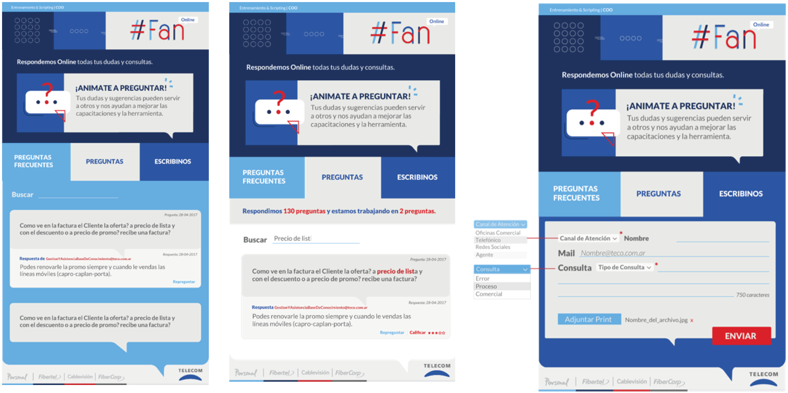
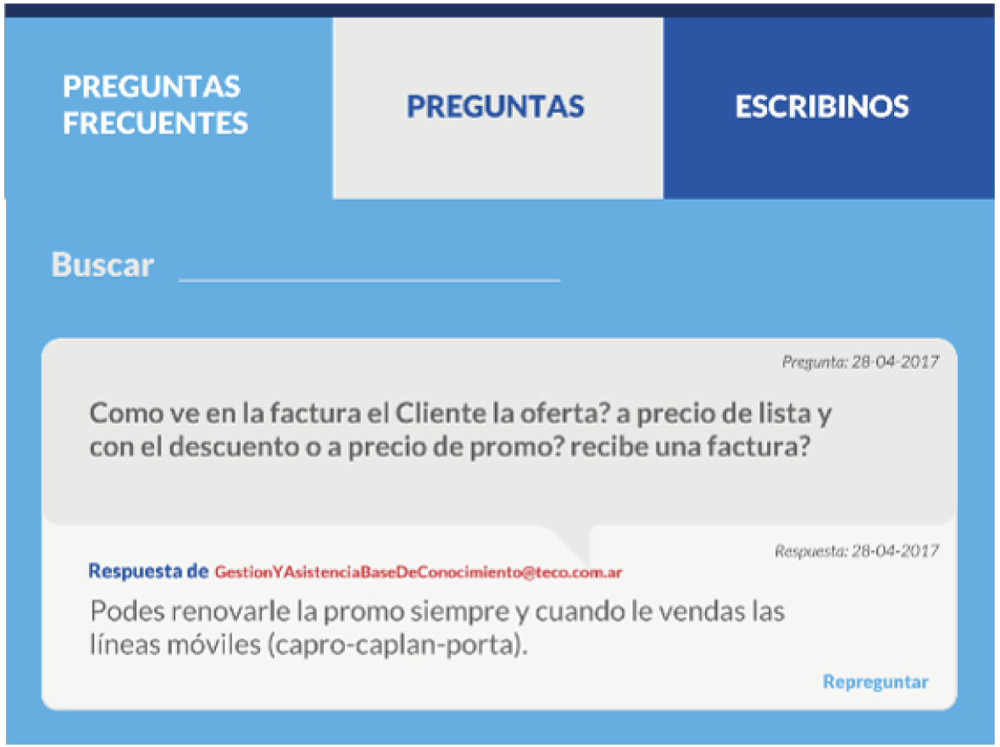
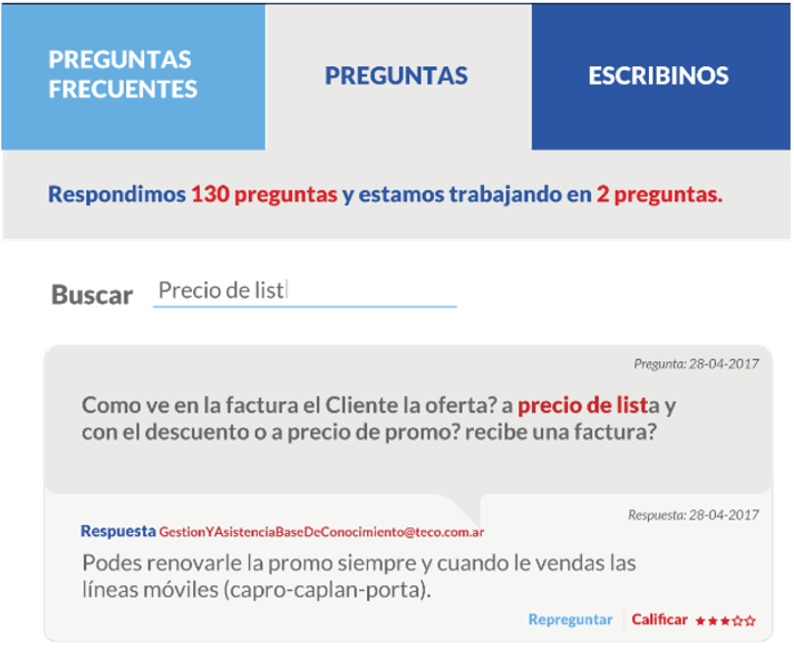
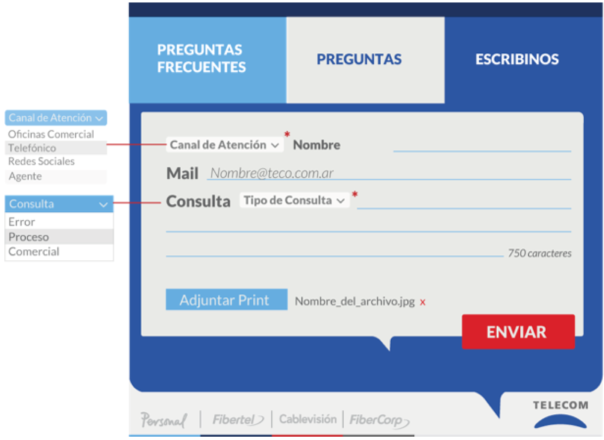

Asistencia a la Operación
Sabemos que la implementación del Programa #Fan conlleva un cambio radical en tu tarea diaria. Es por eso que armamos distintos equipos de trabajo que te ayudarán a evacuar dudas o escalar incidentes técnicos durante las distintas etapas.
Esta mesa de soporte, que te acompañará durante cada implementación, estará formada por un equipo interdisciplinario que dará Soporte a través de la herramienta Fan Online.
Esta mesa va a estar trabajando con muchas otras áreas para solucionar los inconvenientes y consultas que puedan surgir. En caso de que haya un incidente técnico se encargará de derivar el error con el sector correspondiente, que lo priorizará por estar relacionado a #Fan.
Fan Online
Es una herramienta diseñada para canalizar todas las consultas y errores que puedan surgir durante cada implementación de #Fan. Veamos para qué sirve cada solapa…

Preguntas frecuentes:
En la primera solapa verás las consultas más habituales con sus respectivas respuestas. También tendrás un Buscador que funcionará con palabras clave para que puedas filtrar sobre un tema en particular.

Preguntas:
Podrás ver la cantidad de preguntas ya respondidas y las que restan responder.

Escribinos:
En esta solapa podrás escribir tu consulta, que será respondida por la mesa de soporte. Los campos a completar son obligatorios e incluyen:
-
 Canal: Agente/Telefónico/OC/RRSS
Canal: Agente/Telefónico/OC/RRSS
-
Nombre y apellido
-
Usuario: legajo U
-
Mail: Este dato será útil en caso de que sea necesario contactar a la persona para hacerle alguna consulta. En caso de que no tenga mail propio podrá completar el del líder.
-
Motivo: podrá elegir entre Error, Procesos o Comercial. En caso de que seleccione la opción “Error” deberá adjuntar un print del mismo para continuar.
-
Consulta: tendrá 750 caracteres para redactar la consulta.

Cuando ingreses una pregunta por Fan Online, la herramienta arrojará un aviso de que se recibió la misma. Tené en cuenta que hasta que la pregunta no sea respondida no aparecerá en la solapa Preguntas.
Las preguntas que ingresen por Fan Online fuera del horario de atención quedarán pendientes para ser vistas luego y responderlas.
¿Cómo derivamos consultas o errores cuando no está #Fan Online?
-
Asistencia Operativa o Procedimental: Al finalizar el período de asistencia vía Fan Online, quedará disponible el canal de consulta vía la casilla
AsistenciaalaOperacion@Teco.com.ar. Remití tus consultas con el asunto “Consulta Fan”.
-
-